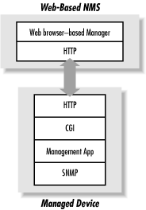

3.3. A Look Ahead
Web-based network management
entails the use of the HyperText Transport
Protocol (HTTP) and the Common Gateway
Interface (CGI) to manage networked entities. It works by
embedding a web server in an SNMP-compatible device, along with a CGI
engine to convert SNMP-like requests (from a web-based NMS) to actual
SNMP operations, and vice versa. Web servers can be embedded into
such devices at very low monetary and operating cost.
Figure 3-4 is a
simplified diagram of the interaction between a web-based NMS and a
managed device. The CGI application bridges the gap between the
management application and the SNMP engine. In some cases, the
management application can be a collection of Java applets that are
downloaded to the web browser and executed on the web-based manager.
Current versions of OpenView ship with a web-based GUI.

Figure 3-4. Web-based network management
Web-based network management could
eliminate, or at least reduce, the need for traditional NMS software.
NMS software can be expensive to purchase, set up, and maintain. Most
of today's major NMS vendors support only a few popular
versions of Unix, and have only recently begun to support Windows
9x/NT/2000, thus limiting your operating-system choices. With a
web-based NMS, however, these two concerns are moot. For the most
part web-browser technology is free, and Netscape Communications (now
AOL Time Warner) supports many flavors of Unix, as well as the Wintel
and Apple platforms.
Web-based network
management should not be viewed as a panacea, though. It is a good
idea, but it will take some time for vendors to embrace this
technology and move toward web-integration of their existing
products. There is also the issue of standardization, or the lack of
it. The Web-Based Enterprise Management (WBEM)
consortium addresses this by defining a standard for web-based
management. Industry leaders such as Cisco and BMC Software are among
the original founders of WBEM. You can learn more about this
initiative at the Distributed Management Task Force's web page,
http://www.dmtf.org/wbem/.
 |  |  |
| 3.2. NMS Architectures |  | 4. SNMP-Compatible Hardware |

Copyright © 2002 O'Reilly & Associates. All rights reserved.